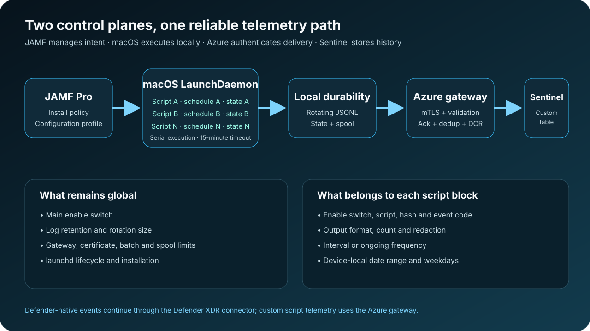

01 · The design boundary
Inventory and telemetry solve different problems
An Extension Attribute answers a JAMF question: what is the current value I need for inventory, scoping, a smart group, or remediation? Telemetry answers a different question: what happened, when did it happen, how often is it changing, and can the SOC correlate it with other events?
When a temporary measurement is collected through recurring inventory, every sample can trigger endpoint work, network traffic, JAMF application processing, and database activity. The latest value also replaces the history that an investigation may need.
Practical rule
Keep stable facts needed by JAMF in Extension Attributes. Send changing operational, diagnostic, compliance, and security signals to Sentinel.
02 · Architecture
JAMF manages intent; the Mac owns execution
A root LaunchDaemon remains active through launchd. JAMF installs it with one generated policy script and manages its configuration through an Application & Custom Settings profile. No Apple Developer account, Developer ID certificate, notarization flow, or additional runtime is required on managed Macs.

The endpoint writes every event to rotating JSON Lines and, when gateway delivery is enabled, to an atomic spool. The Mac deletes a queued event only after the gateway explicitly acknowledges its event ID.
03 · Multiple collections
One daemon can run many independently controlled scripts
The profile contains a Scripts array. Every block has a stable identifier and its own enable switch, script, optional SHA-256 allowlist, event code, output contract, redaction patterns, frequency, date range, and weekdays. If several blocks are due together, the daemon runs them serially so their output and process trees cannot interfere.
<key>Scripts</key>
<array>
<dict>
<key>Identifier</key><string>uptime</string>
<key>Enabled</key><true/>
<key>EventCode</key><string>MAC_UPTIME_SECONDS</string>
<key>OutputFormat</key><string>INTEGER</string>
<key>FrequencyMode</key><string>INTERVAL</string>
<key>FrequencySeconds</key><integer>300</integer>
<key>DaysOfWeek</key><array/>
</dict>
<dict>
<key>Identifier</key><string>filevault-status</string>
<!-- Independent script, output and schedule controls -->
</dict>
</array>The state file mirrors this design with a scriptStates object keyed by identifier. A failure or schedule decision for one collection does not overwrite the status of another.
04 · Local-time schedules
A schedule follows the device, not the JAMF server
StartLocalDateTime, EndLocalDateTime, and DaysOfWeek are evaluated against the Mac's current local timezone and daylight-saving rules. This matters for globally distributed devices: “Monday at 09:00” means Monday at 09:00 for that Mac.
- INTERVAL waits the block's configured number of seconds after its prior run.
- ONGOING begins again after completion and a minimum cooldown.
- An empty date range and weekday list allow the block to run on any local date.
- Every execution has a fixed 15-minute production timeout.
05 · Output contracts
Custom does not mean unstructured
A block declares one of four formats: JSON, raw string, Boolean, or integer. JSON must be the complete standard-output value. Other formats use numbered tags, allowing a JAMF administrator to decide how many outputs a script must provide.
echo '<OUTPUT_1>42</OUTPUT_1>'
echo '<OUTPUT_2>true</OUTPUT_2>'Missing tags, invalid types, nonzero exits, timeouts, and cancellations become structured telemetry events. Output capture is bounded, secrets can be redacted with per-script regular expressions, and the executed script hash is included in telemetry.
06 · Two Sentinel paths
Defender telemetry and custom telemetry remain separate
When Microsoft Defender for Endpoint is installed, Defender-native security events should continue through the Defender XDR connector. Defender does not automatically ingest this project's custom JSONL file.
Custom script events use an Azure Function or API gateway. The reference gateway requires a client certificate, validates certificate dates and issuer, claims event IDs in Azure Table Storage for deduplication, and uses managed identity to publish through a direct-ingestion Data Collection Rule. Sentinel receives the records in JamfMacTelemetry_CL, including ScriptIdentifier and ScriptName.
07 · Reliability and security
Assume devices go offline and scripts can fail
- Atomic state survives daemon and Mac restarts.
- Rotating JSONL keeps local telemetry readable and bounded.
- The durable spool has configurable age and size limits.
- Upload retries use bounded exponential backoff, jitter, and
Retry-After. - Timeout or profile disablement terminates the complete script process group.
- Device private keys remain in the macOS System Keychain.
- No Azure application secret is distributed through JAMF.
08 · JAMF deployment
The operational path stays deliberately small
- Run
./scripts/generate-assets.shon a Mac with Xcode Command Line Tools. - Upload the generated
dist/jamf-deploy.shas one JAMF script. - Create policies that reuse it with
install,upgrade,doctor,rollback,uninstall, orpurge. - Upload the generated version 2 JSON schema to an Application & Custom Settings profile.
- Add script blocks, begin with the global switch off, and validate on a pilot Mac.
- Deploy the System Keychain client identity, enable the gateway, and confirm queue drain and Sentinel arrival.
uninstall preserves logs and state for investigation. purge removes the service and its data, making removal predictable.
09 · Testing without Azure
Most of the system can be proved locally
The endpoint suite validates multiple scripts, independent state, local-weekday schedules, typed output, redaction, hashing, timeout, rotation, retention, spooling, and cancellation. A second suite creates a temporary certificate authority and localhost HTTPS gateway to test real mutual TLS, throttling, retry, acknowledgement, queue draining, and duplicate suppression.
What still needs a subscription
Azure deployment, managed-identity token acquisition, DCR ingestion, Sentinel table population, analytics rules, retention, and cost validation require a real non-production Azure environment.
10 · Outcome
Use JAMF as the control plane, not the event store
This architecture does not replace JAMF inventory or Extension Attributes. It protects their purpose. JAMF remains responsible for deployment, configuration, scoping, and stable device facts. The local daemon handles reliable execution, while Sentinel becomes the searchable history for rapidly changing signals.
The result is a cleaner boundary: less pressure to force telemetry through inventory, stronger per-script controls, resilient delivery, and data shaped for investigation from the moment it is collected.